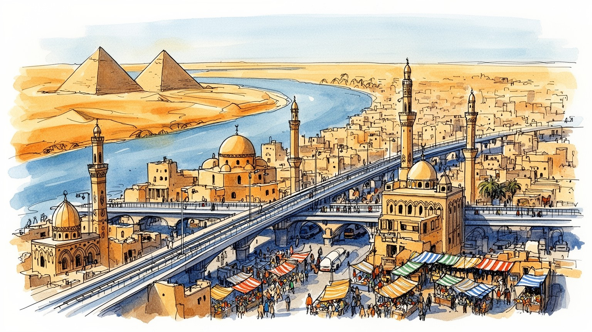
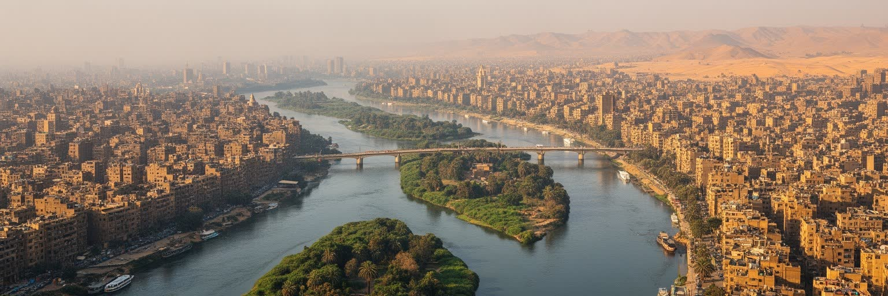
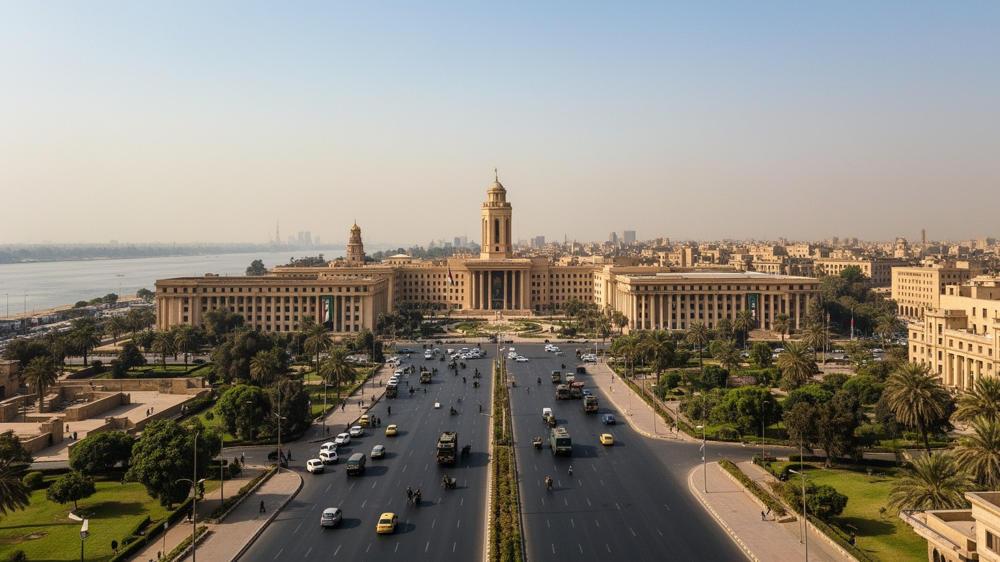
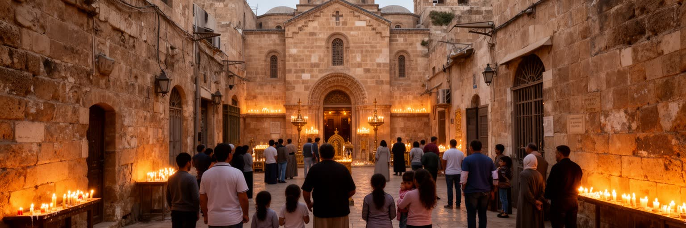
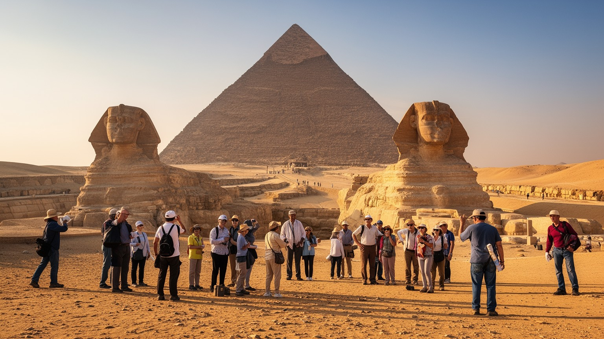
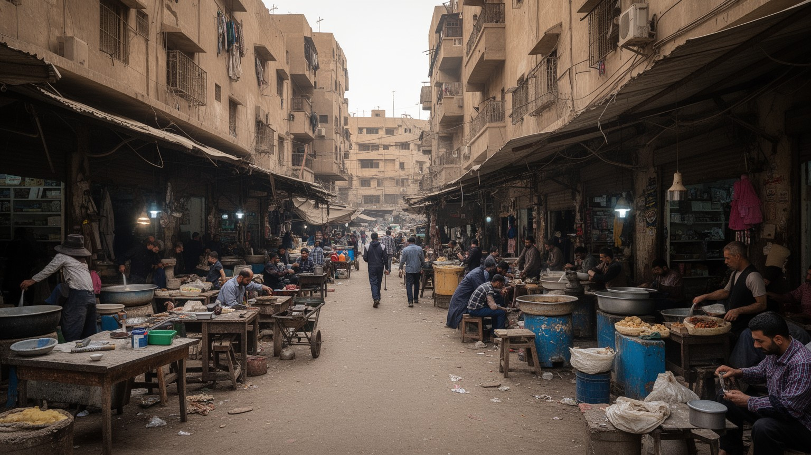
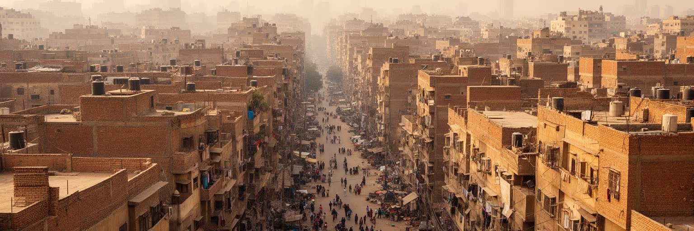
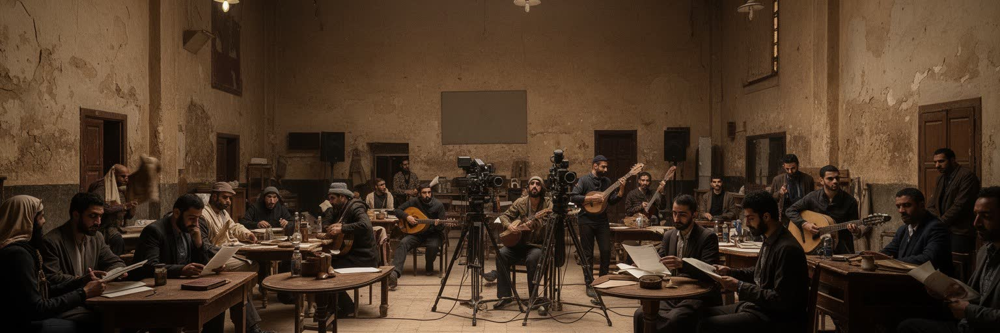
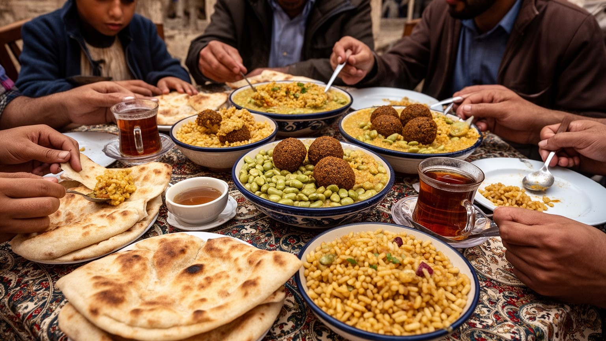
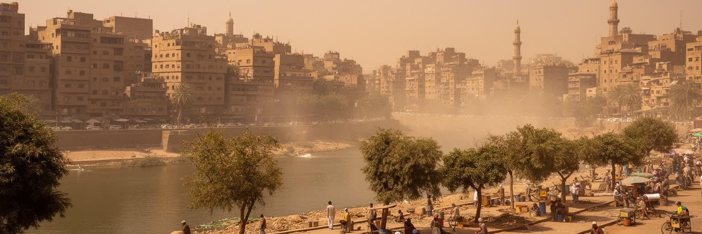

地政学
カイロはエジプト国家の中枢で、ナイル流域、スエズ運河、地中海と紅海、アラブ外交、アフリカ政策を結びます。軍、政府、報道、大学、宗教権威が近く、地域政治の緊張も映ります。水外交と国境管理も日常の背景です。

🇪🇬 エジプト / アフリカ / World City Atlas
ナイル川、砂漠、イスラム旧市街、政府機能、映画と出版、ギザの遺産、密集住宅が重なり、アラブ世界とアフリカ北東部を結ぶ巨大首都圏。
都市の骨格
カイロは川沿いの農地、砂漠へ伸びる新都市、旧市街の宗教空間、ギザの観光、行政とメディアを一つの通勤圏で結びます。

カイロはエジプト国家の中枢で、ナイル流域、スエズ運河、地中海と紅海、アラブ外交、アフリカ政策を結びます。軍、政府、報道、大学、宗教権威が近く、地域政治の緊張も映ります。水外交と国境管理も日常の背景です。
行政、金融、建設、観光、映画、出版、繊維、食品、交通の仕事が集まり、露店、工房、配送、家事労働も都市を支えます。若者雇用、物価、非公式経済が生活を左右します。賃金と移動時間も家計を圧迫する大都市です。
イスラム旧市街、コプト地区、大学、映画館、カフェ、書店、音楽が並び、祈りと娯楽が日常を形づくります。アズハルの学問、モスクの声、教会の暦、断食月の夜が都市の時間を刻み、文化を動かす濃い生活の街です。
ピラミッドや博物館の近くに、渋滞、住宅不足、パン、地下鉄、露店、家族の外出があります。旅の景観と住民の生活費、暑さ、空気、水の問題が同じ街路で交わります。観光収入も暮らしに直結する生活の濃い都市です。

カイロの地理は、ナイル川の水と周囲の砂漠を同時に感じると理解しやすいです。都市は川の両岸と中州、デルタへ向かう低地、ギザ側の台地、東西の砂漠道路に沿って広がり、農地、住宅、政府機関、観光地、新都市が細長くつながります。朝は川の湿気が橋の上に残り、昼には砂埃が車体や店先に積もり、夕方には礼拝の呼びかけが水面と高架道路の音に重なります。水は飲料、緑地、遊覧船、ホテルの価値を作る一方、人口増加と開発は農地を圧迫します。橋の位置は通勤、学校、病院、市場への時間を決め、川を渡るだけで家賃や職場への近さが変わります。砂漠のニュータウンは住宅を増やしますが、徒歩や公共交通に頼る人を中心から遠ざける場合もあります。カイロの地図は、川に寄り添う都市と砂漠へ伸びる都市が同時に描かれた緊張の地図です。水路、排水、橋、堤防の管理は、食料価格、通勤、暑い日の安全を左右します。川沿いの散歩道では家族が涼み、船上カフェから音楽やサッカー中継の声が漏れる一方、少し離れた幹線道路では渋滞と砂埃が絶えません。同じナイルを眺めても、観光客、通勤者、屋台の売り手、川辺に住む人が感じる都市の距離は違います。季節や時間で匂いと明るさも変わり、川は地図以上に生活の感覚を決めます。水面の近さは暑い日の記憶にも残り、夜の風が家族の散歩を誘います。

カイロはエジプトの首都であり、行政、軍、司法、国営企業、報道、大学、宗教権威が集中する政治都市です。タハリール広場周辺の官庁や博物館、ナイル東岸の省庁街、砂漠へ移る新行政首都の計画は、国家が都市空間をどう使うかを示しています。広場や橋は交通施設であると同時に、抗議、式典、警備、記憶の場所でもあります。二〇一一年の革命とその後の政治変化は、中心部が商業地だけでなく、市民と権力が向き合う舞台であることを印象づけました。政府機能の一部を新都市へ移す動きは混雑緩和と安全管理を目指しますが、古い中心部の雇用、通勤、象徴性はすぐには消えません。大使館、国際機関、新聞社、テレビ局、大学の研究者も集まり、スエズ運河、安全保障、ガザ情勢、ナイル水利、移民政策の言葉が同じ地区で作られます。国家は巨大な建物だけでなく、身分証、補助金、兵役、学校制度、テレビニュースとして家庭に入ります。道路は国際会議や警備で急に意味を変え、迂回路が通学や仕事の予定を動かします。大学の講義室や新聞社の編集部では政策の言葉が日常語に翻訳され、家庭では食料補助、電気料金、徴兵、為替が会話に入ります。首都の圧力は式典の日だけでなく、毎朝の検問、急な通行止め、ニュース速報の音として積み重なります。政治は遠い制度ではなく、生活時間を変える力です。
イスラム・カイロの旧市街は、モスク、マドラサ、霊廟、門、市場、職人街が折り重なる歴史的な都市です。アズハル、フセイン地区、ハーン・ハリーリの路地では、信仰、学問、商い、観光が近い距離で混ざり、祈りの時間が街の音を変えます。石造建築の装飾や狭い路地は世界遺産として注目されますが、そこは住民が働き、買い物をし、子どもを育てる生活空間でもあります。礼拝後の食堂、金属工房の打音、香辛料や香水の匂い、土産物店の交渉、コーヒーハウスの水たばことアル・アハリ対ザマレクの中継まで含めて、旧市街はカイロの歴史が働く場所です。アズハルの学問は広いイスラム世界の議論にも影響を与え、ラマダンの夜には断食明けの食事、買い物、菓子、家族の外出で路地の時間が遅くまでにぎわいます。保存は建物を美しく見せるだけでは足りず、老朽住宅、交通、ゴミ、家賃、観光客の流れ、職人の継承を同時に扱う必要があります。古い門や通り名は王朝の記憶を残しますが、現在の住民はその石の間で家賃を払い、学校へ送り、生活用品を買います。観光客の視線が装飾を追う横で、住民はパンの値段や修繕費を気にし、子どもは狭い路地を学校へ急ぎます。遺産は静かな過去ではなく、商いと祈りがぶつかる現在の条件です。夕暮れの灯りが石壁に当たるころ、路地は観光地から近所の居間へ戻ります。

カイロ南部のコプト地区は、エジプトがイスラム都市であるだけでなく、古いキリスト教の記憶を抱える場所であることを示します。吊り教会、聖堂、修道院、狭い路地、博物館は、ローマ支配、ビザンツ、イスラム化、近代国家の時間を一つの地区に重ねます。コプト教徒はエジプト社会の重要な少数派であり、宗教行事、学校、福祉、家族のつながりを通じて都市生活に深く関わってきました。観光客には静かな歴史地区に見えますが、住民にとっては信仰、身分、教育、雇用、近隣関係が結びつく生活の場です。教会付属の学校や慈善活動は、子どもの教育と高齢者の支えにもなり、祝祭や葬儀の日には家族の予定、路地の混雑、交通の流れが変わります。宗派間関係は日常の共存と政治的緊張の両方を含み、教会の警備には社会の不安も映ります。多宗教都市としてのカイロを見るには、共存の美談だけでなく、不安を抱えながら働き、学び、隣人づきあいを続ける住民の工夫も見る必要があります。少数派の歴史を守ることは建物保存にとどまらず、安心して通学し、働き、年を重ねられる環境を保つことでもあります。教会の鐘や祈り、近くの市場の声、家族で交わす挨拶は、宗教が都市を分けるだけでなく、日々の時間割を作ることも教えます。静けさの内側に、学び、介護、仕事探しの現実があります。信仰は生活の支えです。

ギザのピラミッドとスフィンクスは、カイロを世界地図に刻む強力な象徴です。ですが遺産は都市の外に孤立した古代景観ではなく、ホテル、道路、博物館、土産物店、馬車、ガイド、警備、清掃、写真撮影、交通渋滞と結びつく現代の観光経済でもあります。大エジプト博物館の整備は、古代遺産を新しい展示と都市インフラに接続し、訪問者の流れをギザ側へ引き寄せます。朝の光や夕景を待つ観光客の背後で、馬の世話、車両整理、水の販売、屋台の軽食、土産の交渉が絶えません。観光収入は外貨、雇用、国家イメージを支える一方、政治不安、感染症、為替、治安報道に影響を受けやすいです。遺跡の保存には発掘や修復だけでなく、周辺の下水、道路、住宅、警備、観光教育が関わります。古代王権の石造物は、家族経営の店や若いガイドの不安定な収入と隣り合っています。旅程の短い訪問者ほど遺跡だけを見て去りますが、ギザは学校、商店、住宅、試合を流すカフェがある生活圏でもあります。観光バスが去った後も、店の片付け、家への帰路、子どもの宿題、家畜の世話が残ります。遺産を守るとは石を守るだけでなく、周辺で働く人が乱暴な競争に追い込まれない仕組みを作ることでもあります。砂埃の向こうに住宅街の明かりが見えると、古代と現在が同じ夕方に並びます。旅は生活の横を進みます。

カイロの経済は、政府機関、銀行、通信、建設、不動産、観光、映画、出版、食品、繊維、家具、修理業が厚く重なります。オフィス街や大型商業施設の成長は目立ちますが、都市を毎日動かすのは露店、ミニバス、修理工房、小売店、家事労働、配送、清掃、警備、飲食の膨大な労働です。駅前では乗り継ぎ客へ水やパンを売り、古い路地では携帯修理、衣料、香辛料、印刷、配達が細かく回ります。公式な雇用だけでは生活を支えきれない人も多く、路上経済は弱さであると同時に、家族と地域が生き延びる柔軟な仕組みでもあります。若者は大学を出ても安定した職に届きにくく、物価上昇と通貨安は賃金の価値を削ります。女性の通勤の安全、保育、家族の期待も就業を左右します。職人街では技能が親族や弟子へ受け継がれる一方、安い輸入品や家賃上昇が小さな工房を圧迫します。都市経済の強さは、数字の大きさだけでなく、働く人が食費、交通費、住居費を払い、休む時間を確保できるかに表れます。観光や建設が伸びても、社会保障や技能教育が弱ければ、若い世代は将来を描きにくいです。映画やテレビ、出版を支える現場も、華やかな画面の外側では運搬、印刷、衣装、照明、翻訳、弁当手配の積み重ねです。ストリート経済は都市の余白ではなく、物価高のなかで家計をつなぐ主要な回路です。小さな稼ぎの連続が街を支えます。

カイロの住まいは、旧市街の老朽住宅、ナイル沿いの高級集合住宅、非公式に拡大した地区、砂漠のニュータウン、ギザ側の住宅地まで幅広いです。人口増加は長く住宅不足を生み、家族は増築、同居、未完成建物、遠距離通勤で対応してきました。赤茶色の未完成住宅が並ぶ景観は、資金ができるたびに階を足し、子どもの将来の部屋や結婚後の住まいを確保する生活戦略でもあります。密集地では祖父母が路地の椅子から近所を見守り、子どもは車のすき間で遊び、屋上や階段室、小さな店が足りない公共空間を補います。砂漠の新都市は広い道路と新しい住宅を提供しますが、仕事、学校、病院、公共交通が十分でなければ、暮らしは車と長い移動に縛られます。家賃、老朽化、災害リスク、プライバシーの不足は重く、再開発や立ち退きは安全性を高める場合がある一方、長い近隣関係や安い家賃を失わせます。住宅事情は建物の数だけでなく、若者の結婚、女性の移動、教育、仕事への到達を左右します。夕方には窓から料理の匂いとテレビの音が漏れ、サッカー中継の日は近所の歓声が壁を越えます。住まいは休む場所であると同時に、介護、勉強、内職、近隣の助け合いが重なる生活の基盤です。暑い夜に屋上へ出る家族も多く、涼しさを分け合う場所が小さな公共空間になります。家の狭さも関係の近さも日常です。
カイロの移動は、ナイルを渡る橋、地下鉄、国鉄、ミニバス、タクシー、配車サービス、徒歩が複雑に組み合わさっています。都市圏が広がるほど通勤距離は伸び、渋滞は時間、燃料、空気、家族の生活を奪います。地下鉄は中心部、ギザ、郊外を結び、女性専用車両や駅前の商いも含めて独自の公共空間を作っています。車内のブレーキ音、売り子の声、乗り換えを急ぐ足音、地上に出た瞬間のクラクションが、カイロの一日のリズムを作ります。それでも路線だけで巨大な需要を吸収することは難しく、ミニバスや相乗り交通が細かな地区を補います。新しい道路や高架橋は車の流れを改善する一方、歩行者の横断、古い街路、商店、歴史景観を分断することもあります。通勤の遅れは職場の評価、学校の到着、診療予約、家族の夕食まで連鎖します。女性、高齢者、障害のある人にとっては、混雑や歩道の状態が外出の自由を左右します。駅前には露店や呼び込みが集まり、交通は小さな商いの場にもなります。燃料価格が上がれば運賃と食品価格に響き、渋滞は単なる不便ではなく家計の問題になります。学生は試験時間を気にし、親は子どもの迎えに遅れ、高齢者は階段の多い駅を避けます。移動の公平さは、都市の社会的な距離を測る物差しです。音の大きさも交通の負担で、静けさは暑さや砂埃から離れる時間と同じほど貴重です。

カイロは長くアラブ世界の映画、音楽、出版、新聞、テレビ、ラジオ、教育の中心の一つでした。エジプト映画のスター、歌手、作家、風刺、連続ドラマ、ラマダン番組は、方言や物語を広域に届け、カイロの街角を文化的な基準点にしました。ダウンタウンのカフェ、劇場、書店、大学、編集部、録音スタジオは、政治的な議論と娯楽を同じ都市の空気に置きます。カイロ大学やアズハル大学の学生は、講義、通学、アルバイト、試験、恋愛、家族の期待を抱えて街を動きます。検閲、資金不足、移民、デジタル化、湾岸資本との関係は映像や音楽の現場を変えていますが、文化的な厚みは簡単には消えません。アル・アハリとザマレクの試合日は、カフェのテレビ、ラジオ実況、SNSの短い投稿、家族内のひいきで街の温度が変わります。現場には俳優や監督だけでなく、照明、衣装、翻訳、編集、配信、警備、食事を支える仕事があります。文学や音楽は政治の圧力を受けながら、比喩や冗談で社会を語ってきました。街角のユーモア、屋台の会話、サッカーの熱狂は、華やかな作品と同じくカイロの文化力を作ります。出版街の小さな店では教科書、宗教書、小説、受験参考書が並び、テレビドラマの台詞は翌日の職場や教室でまねされます。文化は作品だけでなく、話し方や笑い方として毎日更新されます。夜のカフェは批評の場でもあります。

カイロの日常は、パン、豆料理、米、野菜、茶、甘い菓子、屋台の軽食、家族の食卓によって支えられます。アエーシュと呼ばれるパンは、単なる主食ではなく、補助金、物価、行列、家計、国家との関係を映す食べ物です。フール、タアメイヤ、コシャリ、シャワルマ、ジュース店、コーヒーハウスの水たばこは、通勤者、学生、労働者、家族連れをつなぎます。市場では野菜、肉、香辛料、日用品が狭い路地に並び、交渉と顔なじみの関係が生活を支えます。夕方の屋台は揚げ物の匂い、呼び込み、皿の音でにぎわい、子どもは甘い飲み物をねだり、高齢者は店先の椅子で近所のニュースを聞きます。ラマダンの断食明けには通りの時間が変わり、食卓、菓子店、カフェ、深夜の買い物が家族と近隣の関係を濃くします。食の豊かさの背後には、輸入小麦、燃料価格、冷蔵物流、露店規制、衛生、女性の家事負担があります。食料価格が上がると、献立だけでなく、結婚式、贈り物、外出、子どもの弁当まで影響を受けます。市場の値段は、家計と政治が最も早く出会う話題です。大学帰りの学生は安いコシャリで腹を満たし、夜勤明けの労働者は甘い茶で体を戻します。食卓は愛情の場であると同時に、都市の階層と支え合いが見える場所です。味と値段は毎日のニュースです。腹具合も都市の指標です。声も匂いも残ります。

カイロは乾燥した砂漠気候の都市で、夏の暑さ、砂埃、大気汚染、限られた緑地、水需要が生活の質を左右します。朝のナイル沿いには湿気が残り、昼の道路では排気ガスと細かな砂が混ざり、夕方の礼拝の呼びかけはクラクションや地下鉄の音と重なります。自動車、工場、建設、廃棄物、砂嵐は空気を悪化させ、呼吸器の健康や屋外労働に負担をかけます。ナイルの水は都市の生命線ですが、人口増加、農業、上流国との水利用、気候変動は水資源を政治と生活の問題にします。暑い季節にはエアコンへの依存が高まり、電力費や停電の不安が家計を圧迫します。緑地や日陰の少ない地区では、子ども、高齢者、屋外で働く人ほど熱の影響を受けやすいです。ゴミの回収やリサイクルを担う人びとは、衛生と都市経済の重要な一部ですが、危険で低く見られがちな仕事に置かれます。砂埃の多い日は洗濯、屋台、学校の運動、観光の予定まで変わります。木陰、公園、涼める公共施設は、観光の飾りではなく命を守る設備です。ナイルの湿気は夜風を少し和らげますが、密集地では熱がこもり、窓を開ければ騒音と埃も入ります。環境対策は景観整備ではなく、健康、労働、交通、住宅、水外交を結ぶ都市の宿題です。涼める場所の差は、所得や年齢の差として体に現れます。空気の重さは日常の疲れになります。水の近さが救いです。
カイロは、古代遺産の壮大さだけで語るには現代的で、混雑や貧困だけで語るには文化的な厚みを持つ都市です。ナイルの橋、イスラム旧市街、コプト地区、ギザの台地、タハリール広場、地下鉄、砂漠の新都市、露店、市場、映画館、大学、モスク、教会が一つの都市圏で互いに押し合っています。国家の中枢であることは雇用と権威を集めますが、政治的な緊張も中心部に刻みます。観光は外貨と誇りをもたらしますが、住民の暮らしは物価、住宅、渋滞、暑さ、水に左右されます。カイロを読むには、ピラミッドを遠景に置きながら、パンを買う列、地下鉄の混雑、礼拝の声、若者の仕事探し、アル・アハリとザマレクをめぐるカフェの議論を同じ地図に載せる必要があります。宗教は対立の記号ではなく、学校、福祉、家族、暦、音として街を形づくります。朝の通勤、昼の礼拝、夕方の渋滞、ラマダンの夜の市場、深夜のコーヒーハウスは、別々の風景ではなく同じ都市の呼吸です。数字で測れる規模と、家族が感じる生活費の重さを重ねて見ると、カイロの輪郭はより立体になります。湿気、砂埃、クラクション、テレビの笑い声、屋台の湯気が重なる場所に、巨大首都の疲れと楽しさが同時に表れます。そこまで見ると、遺産都市ではなく生きている生活都市としての姿が見えてきます。理解は路上から始まります。